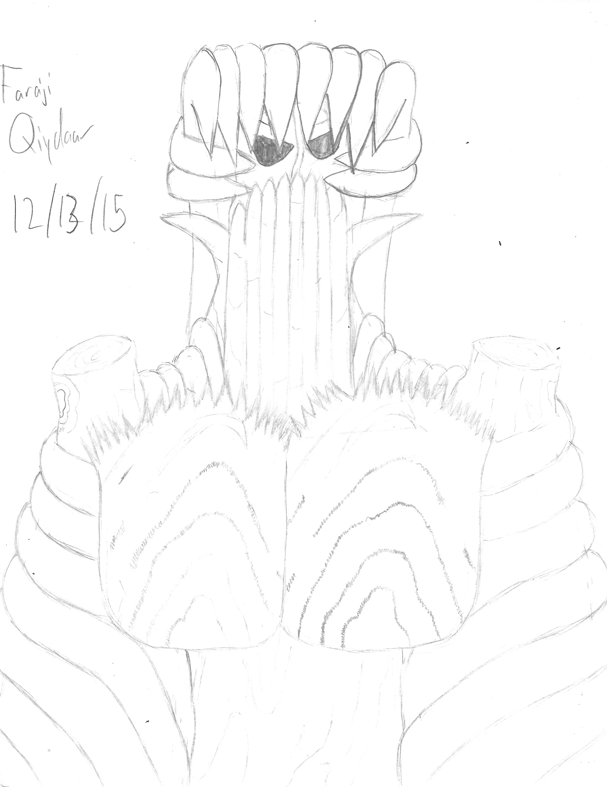
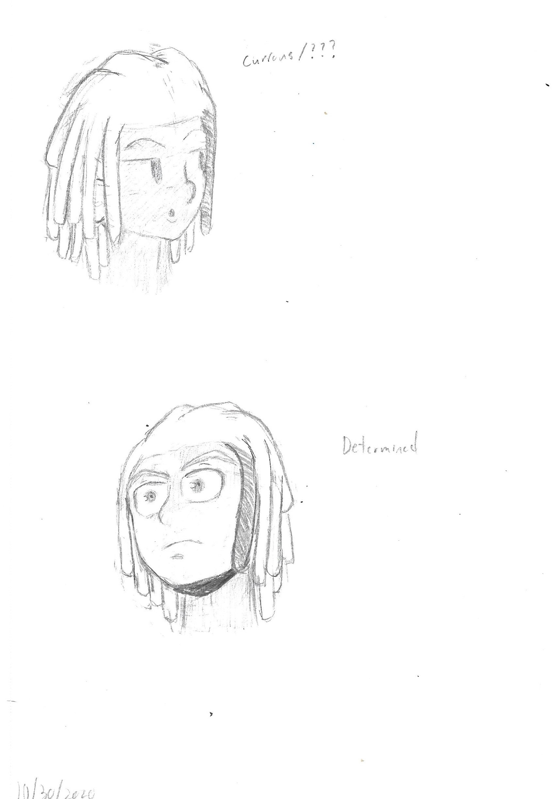
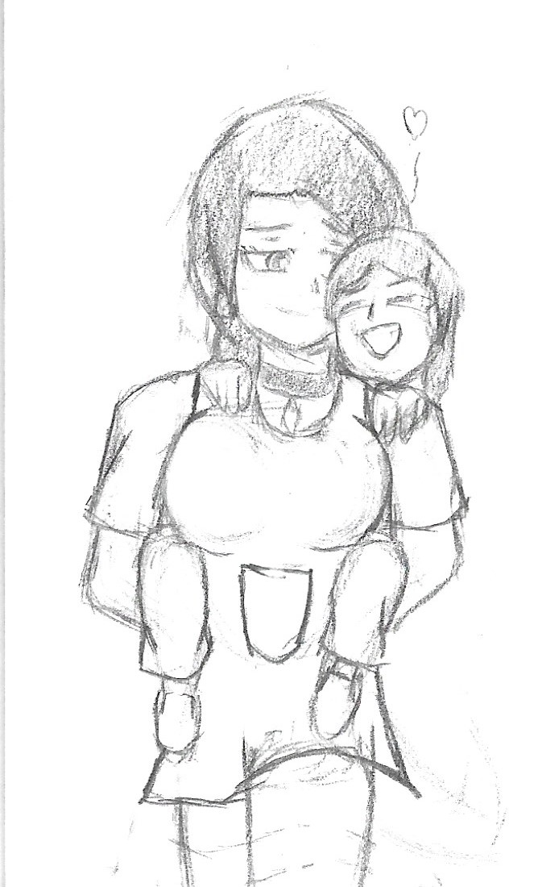
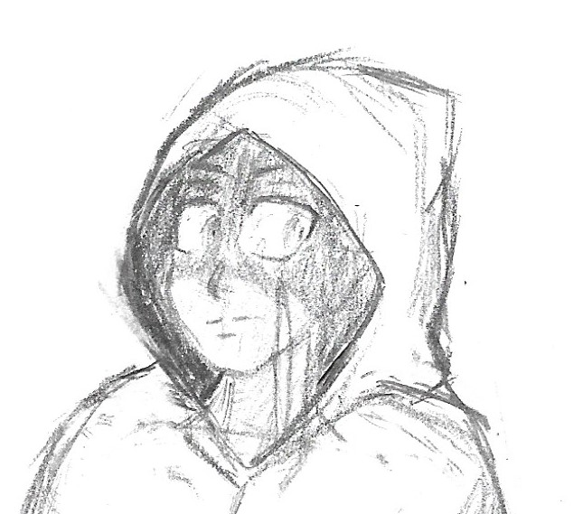
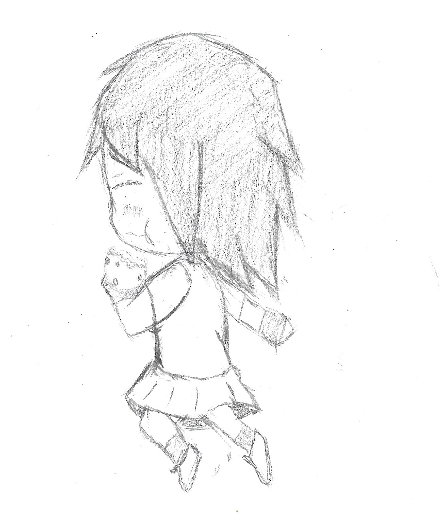
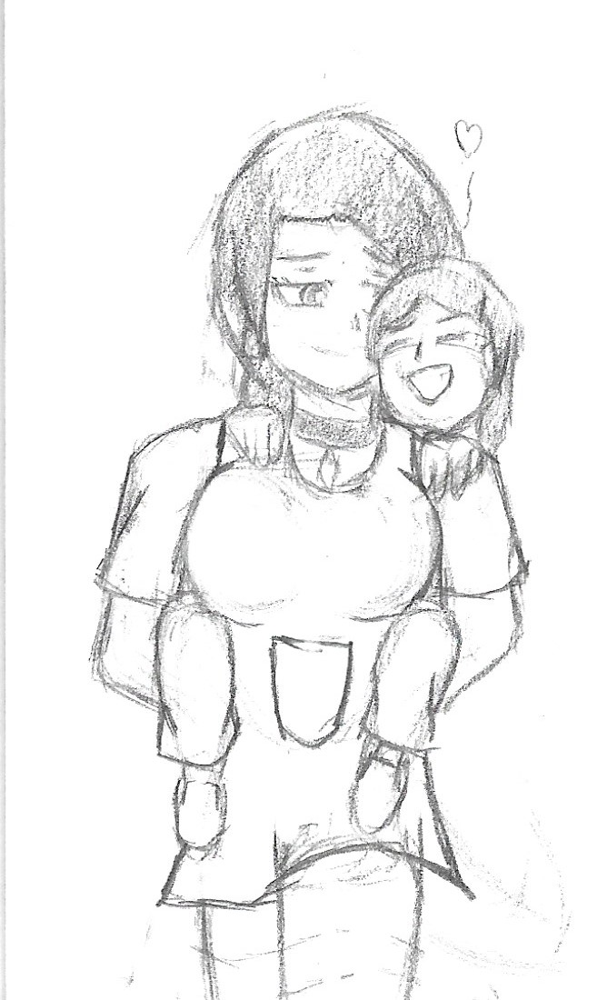
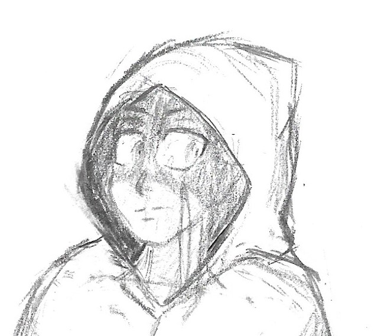
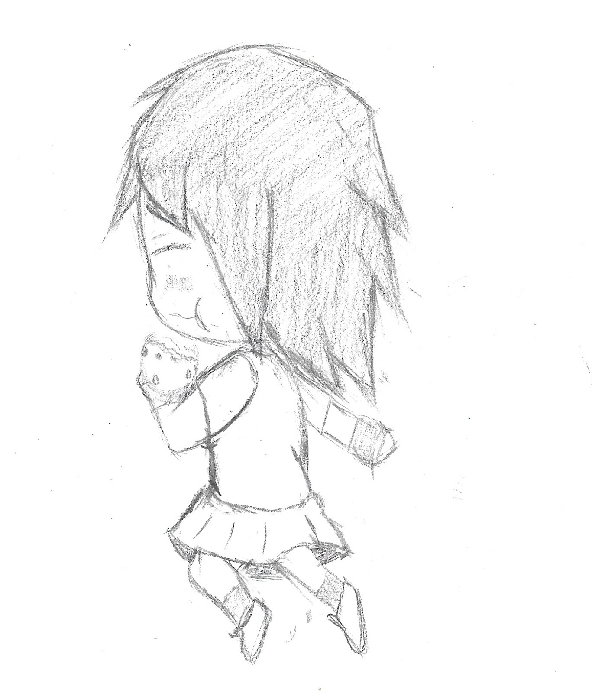

Welcome to my gallery! Here you will see some sketches that I've made over the years. I did not add all of my artwork, but I will in the future.
These are some old drawings that I've made around my second year in highschool
Here are some drawings that I've made during my time in highschool to my first few years in college.
These are some very recent sketches that I've made in 2021 with the help of dynamic figure drawing, which really motivates me to draw more. I'm very proud of these drawings! I have a lot and I do plan to make more, but here are some that I'll show for now.
 




